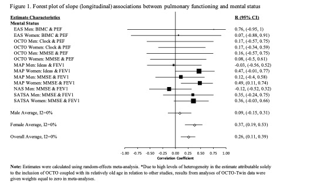
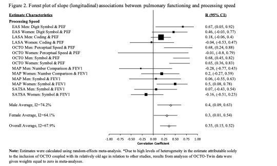
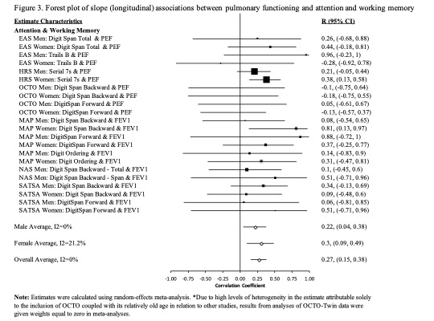
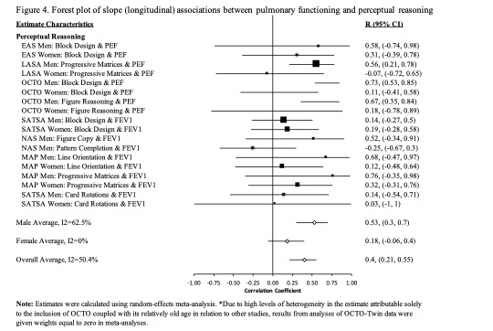
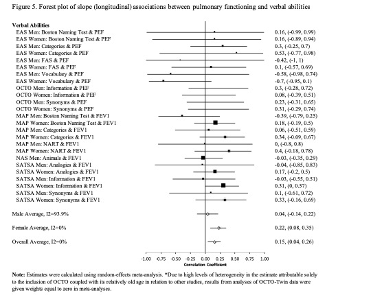
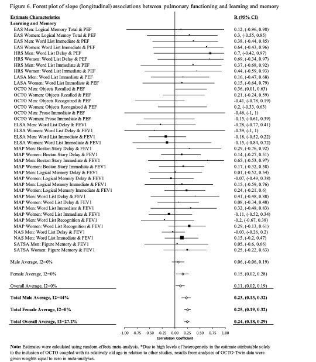
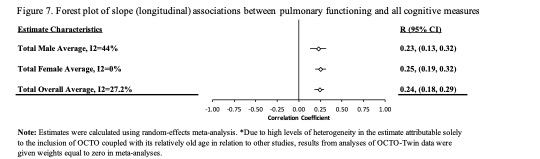
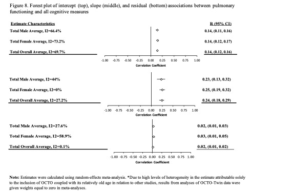

Substantial research is dedicated to understanding the aging-related dynamics among individual differences in level, change, and variation across physical and cognitive abilities. Evaluating replicability and synthesizing these findings has been limited by differences in measurements and samples, and by study design and statistical analyses confounding between-person differences with within-person changes. In this article, we conducted a coordinated analysis and summary meta-analysis of new results on the aging-related dynamics linking pulmonary function and cognitive performance.
We performed coordinated analysis of bivariate growth models in data from 20,586 participants across eight longitudinal studies to examine individual differences in baseline level, rate of change, and occasion-specific variability in pulmonary and cognitive functioning. Results were summarized using meta-analysis.
We found consistent but weak baseline and longitudinal associations in levels of pulmonary and cognitive functioning, but no associations in occasion-specific variability.
Results provide limited evidence for a consistent link between simultaneous changes in pulmonary and cognitive function in a normal aging population. Further research is required to understand patterns of onset of decline and differences in rates of change within and across physical and cognitive functioning domains, both within-individuals and across countries and birth cohorts. Coordinated analysis provides an efficient and rigorous approach for replicating and comparing results across independent longitudinal studies.
       